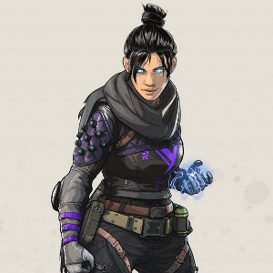

WRAITH
INTERDIMENSIONAL SKIRMISHER
Wraith is a whirlwind fighter, able to execute swift and deadly attacks and manipulate spacetime by opening rifts in the fabric of reality — but she has no idea how she got that way. Years ago, she woke up in an IMC Detention Facility for the Mentally Ill with no memory of her life before. She also began hearing a distant voice whispering in her mind that would keep her awake for days on end. Despite nearly driving her insane, once she started to listen and trust it, the voice helped her harness her newfound power of void manipulation and escape the facility.
Determined to uncover her true identity, Wraith began a quest to find out more about the experiments. Many of the old research facilities, however, are buried beneath heavily guarded arenas used for the Apex Games. Now Wraith has joined the competition, and with every match she gets closer to the truth.

WHO IS WRAITH?
Wraith a is a legend from the game Apex legends
WHAT ARE HER ABILITIES?
PASSIVES: VOICES FROM THE VOID
A voice warns Wraith when an enemy is aiming at her.
LOW PROFILE: Wraith takes +5% damage.
TACTICAL ABILITY: INTO THE VOID
Upon activation, Wraith enters the void for 3 seconds. While in the void, the screen will turn greyscale and you become invulnerable, but also unable to see enemies or their actions
Enemies can see a whispy blue trail showing where you're going while in the void.
While in the void, Wraith is unable to interact with some objects in the world, including doors and objects placed by abilities, but can use ziplines.
There is a brief delay when entering and exiting the void during which Wraith is unable to perform any other action.
Wraith can see other Wraiths nearby if they are in the void as well
ULTIMATE ABILITY: DIMENSIONAL RIFT
Wraith places one end of a portal where she activates the ability, then runs to another location and places the other end. Players can then pass through the portal to take that same path through the void at 5x the speed they would otherwise. It can be used in either direction.
Wraith can run roughly 100 meters before placing the other end of the portal. The 'timer' does not count down while standing still.
While running to place the other end, Wraith cannot use any weapons, items, or map features, but she does receive a 25% speed bonus and can use Into the Void.
Players taking the portal are invulnerable and leave a faint blue trail, much like Wraith while using Into the Void.
HOW TO USE WRAITH?
Just click heads and hold "W" 4Head